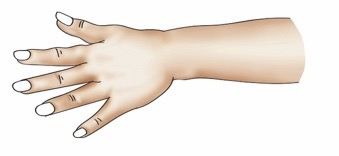
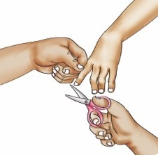
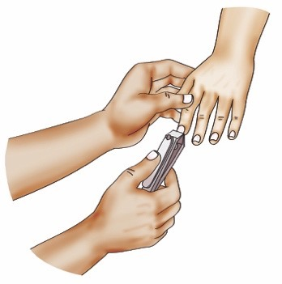
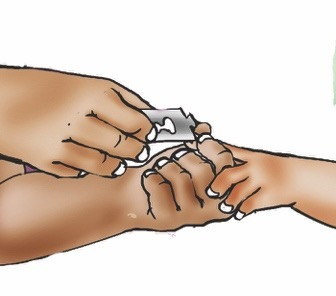
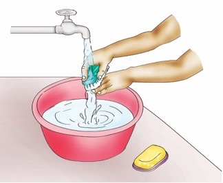

I cut and wash my fingernails.
I cut and wash my fingernails.

I cut my fingernails using different items.







Question
Why is it important to cut and wash your fingernails?
Activity 7
(a) Listen to the video and follow the audio description or watch videos on the internet showing the steps for cutting and washing fingernails.
(b) Cut and wash your fingernails by following the steps
you have learnt.
Exercise 5
1. Mention three (3) items used for cutting and washing
fingernails.
2. Draw or describe any one item you like to use when cutting your fingernails.